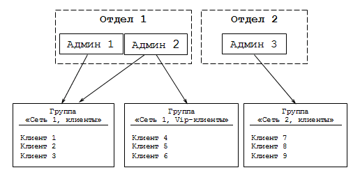
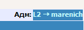
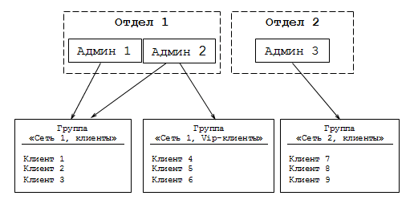
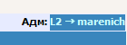

| Биллинговая система NoDeny. Система привилегий |
С NoDeny как с масштабной системой взаимодействует обширный персонал. Человеческий фактор, как известно, самое слабое звено.
Ограничив работника (админа, диспетчера, техподдержку, руководителя, бухгалтера) в списке доступных действий, т.е
выдав права на выполнение строго определенного круга задач, вы значительно обезопасите систему и уменьшите количество и эффект
конфликтных ситуаций.
В чем заключаются ограничения?
Во-первых, сеть как предприятие может разделяться на несколько участков, подразделений, отделов и т.д. Работа каждого подраздления может изолироваться от друг-друга на уровне абонентов, работников, поставленных задач, групп тех поддержки, администраторов и т.д. Другими словами, мы можем гарантировать, что случайно (намеренно) диспетчер не выдаст задание работнику чужого отдела, не изменит данные клиента участка сети, который он не обслуживает, не осуществит платеж клиенту другой сети и т.д.
Во-вторых, разделение прав по типам выполняемых задач. Техподдержке запретить проводить платежи, рекламному отделу менять данные клиентов, бухгалтеру выдавать задания работникам и т.д. довольно большой список регулирующих прав.
Разделение на отделы
По сути, в одном биллинге NoDeny может сосуществовать управление различными сетями, со своим персоналом, который может и не подозревать о том, какие сети работают вместе с ним. Такое разделение осуществляется на уровне отделов. Каждый администратор закрепляется за определенным отделом. Естественно, в вашей огранизации все может быть гораздо проще и никаких делений на отделы (подразделения и т.д.) не предусматриваться. В таких случаях администраторы закрепляются за единственным отделом либо вообще не прикрепляются ни к какому отделу.
Список отделов задается в разделе «Операции» → «Настройки» → «Отделы». Перед внесением администраторов в админку, заполните список отделов, к примеру введите всего один с названием вашей организации либо, скажем, «офис».
Каждый работник, которому будет дан доступ в админку NoDeny, будет именоваться администратором, будь он руководителем, бухгалтером или диспетчером.
Для регистрации нового админа либо для изменения привилегий существующего, вы должны залогиниться под логином, которому разрешены функции суперадминистратора.
Зайдите в «Операции» → «Привилегии администраторов». Нажмите «добавить нового» и добавьте учетную запись администратора.
Если в созданной административной записи необходимо авторизоваться средствами вебсервера, то в настройках NoDeny пароль у администратора должен состоять из одного символа тире (минус).
После создания учетной записи, в списке администраторов выберите пункт «привилегии». Внимательно укажите разрешаемые действия для админа - напротив каждого необходимого права поставьте галочку.
Кроме глобальных привилегий, у каждого администратора регулируется доступ к группам клиентов. Эти группы задаются аналогично отделам, но работают независимо. У каждого администратора может быть свой персональный доступ к какой-либо группе либо группам клиентов. В разделе «Операции» → «Настройки» → «Группы клиентов» укажите группы, поделив их по какому-либо признаку. Например, варианты:
1) Район 1, Район 2, Район 3
2) Сеть ААА, Сеть БББ, Сеть ВВВ
3) Администраторы, Сервера, Клиенты, Удаленные клиенты, Vip
При создании/изменении группы, отметьте администраторов, которым хотите дать доступ. Существует 3 вида доступа к группе: полный, ограниченный, отсутствующий. Ограниченный доступ позволяет в минимальном виде получить информацию о клиенте: адрес, ФИО, ip, состояние доступа. Любые изменения данных клиентов блокируются. Ограниченный доступ предназначен для того, чтобы администраторы могли получить более ясную картину о ситуации в сети. Даже если вы хотите скрыть информацию о VIP или корпоративных клиентах, администраторы должны знать, что текущий IP адрес занят, текущая квартира подключена, кабель проложен и т.д.
Отсутствующий доступ предназначен для полного сокрытия абонентов определенной группы от администратора. Подходит для администраторов, которые обслуживают район совершенно непересекающийся с текущим. Во всех списках данные будут максимально скрываться. Почему максимально, а не полностью? Потому что в некоторых случаях сокрытие информации расценивается администратором как ее отсутствие, таким образом данные будут логически искажены, например, загрузка канала включает трафик всех клиентов, в каждой строке со скрытыми данными будет выводиться только лишь трафик и ничего более. В целом даже определение количества абонентов в запрещенной группе будет максимально усложнено (хотя и возможно если администратор будет по id перебирать всех абонентов чтобы посчитать количество сообщений «доступ запрещен»).
Суперадминистратору для разруливания нестандартных и конфликтных ситуаций дайте все права, это:
- доступ ко всем группам клиентов;
- доступ ко всем отделам;
- доступ ко всем пресетам;
- все глобальные привилегии.
В процессе работы каждое действие администратора проходит проверку и если какое-либо действие запрещено, например администратор решил сжульничать и сформировать ложный запрос, то будет выведено соответствующее ошибочное сообщение, а действие отклонено.
На самом верхнем уровне действия администратора делятся на 2 типа:
- касающиеся конкретного клиента;
- не касающиеся конкретного клиента.
Пример действий первого типа: просмотр данных клиента, проведение платежа клиента, посылка сообщения клиенту, изменения данных клиента, задание работникам связанное с клиентом, выдача оборудования клиенту.
Пример действий второго типа: задание работникам не связанное с клиентом, событие системы, «затраты сети», передачи наличных между администраторами, просмотр тарифов, редактирование тарифов, внесение оборудования, работа с разделом топологии сети, просмотр разных статистик и отчетов.
Важно понимать, что разграничение прав основываются на этих двух типах. Действие, связанное с конкретным клиентом, будет проходить проверку на разрешение администратора работать с данной группой клиента. Действие, не связанное с конкретным клиентом, будет проходить проверку имеет ли право администратор работать с записью, созданной в другом отделе. Например, имеем организацию персонала:

На рисунке видно, что в отделе №1 два администратора, один из которых эксклюзивно работает с группой "Vip-клиенты". Любые данные клиентов, платежи, сообщение и др., связанные с "Сетью 1", не будут доступны Администратору №3. Таким же образом администраторы №1 и №2 не будут иметь доступ к клиентам "Сети 2". Тем не менее, возможны ситуации, когда событие не связано с клиентом какой либо сети, например, администратор №1 выдал задание подчиненным работникам ремонтировать магистральный линк. Это событие будет доступно на просмотр (либо управление, что регулируется другими привилегиями) только "отделу №1".
Для более четкого понимания приведем еще несколько примеров.
1) гражданин Иванов был клиентом "Сети №1", но разорвал контракт и администратор удалил его из базы данных (забегая наперед, NoDeny не рекомендует удалять данные клиентов - они же могут понадобиться, поэтому разумно переносить учетные записи разорвавших договора в группу "удаленные"). После удаления, вся история событий и платежей, связанных с данным клиентом, не удаляется т.к. это может нарушить отчетность - поскольку платежи могли касаться определенного администратора, то "наличные на руках" после удаления проводок не будут соответствовать действительности. Вместо удаления платежей, они помечаются как записи с условным именем "сеть", т.е перестают быть связанными с клиентом. Таким образом, теряется возможность проверки прав доступа на основе группы клиента администраторов из других сетей. В этом случае записи проверяются на соответствие отдела администратора.
2) выдача "задания по сети" (задание не связанное с конкретным клиентом) кроме пометки в каком отделе оно было выдано, содержит список работников, выполняющих задание. Работники также как и администраторы закрепляются за отделами. Администраторы других отделов не будут иметь доступ к бланкам работ если в них пристутствует хотя бы один работник из других отделов.
Вообще, автор заблокировал возможность выдачи заданий работникам из разных отделов, иначе это привело бы к конфликтным ситуациям.
По итогу, напомним, что администратор, имеющий право на работу с другими отделами, свободен от ограничений по отделам. Такой суперадмин (вероятно это вы) должен быть чтобы контролировать ситуацию во всей сети.
- средствами вебсервера;
- средствами NoDeny.
В первом случае до открытия страницы, браузер по команде сервера выводит окно с предложением ввести логин и пароль. Только после того как данные будут верны, откроется страница. В этом случае логин и пароль хранятся вне NoDeny, а в файле, указанном в настройках вебсервера. Таким образом разрешением доступа к скриптам управляет именно веб-сервер, поэтому позаботьтесь о его безопасной настройке, в часности, файл с хешами паролей должен находится в месте, где стоит жесткий запрет на доступ через веб.
Авторизация системы NoDeny не выводит дополнительное окно перед отображением страниц, а выводит страницу с предложением ввести логин и пароль. После ввода правильных данных, система формирует id сессии, под которым будет работать администратор.
Исходя из опыта, автор рекомендует использовать двойную авторизацию: сперва вебсервером, затем NoDeny. Какие преимущества в такой усложненной схеме?
Во-первых, администраторами принято работать с менее привилигированными правами и только в случае необходимости переключаться на учетную запись с высокими привилегиями. Во-вторых, авторизация через веб-сервер принимает на себя нагрузку от возможного большого количества попыток залогиниться левыми людьми, поскольку нет необходимости в каждом случае обращаться к базе данных NoDeny. Более того, удобно авторизоваться под общей учетной записью для определенного отдела (сети) и иметь ограниченные права по доступу к определенным группам абонентов, операциям и т.д, при этом иметь возможность переключиться на свой персональный логин.
Администратор, авторизующийся средствами NoDeny имеет возможность изменить пароль своей учетной записи.
При двойной авторизации в верхнем правом углу админки будет отображено с какого на какой логин было произведено переключение:

В примере показано, что средствами вебсервера был вход под логином L2 (это имя отдела), затем произошло переключение на администратора marenich.
В чем заключаются ограничения?
Во-первых, сеть как предприятие может разделяться на несколько участков, подразделений, отделов и т.д. Работа каждого подраздления может изолироваться от друг-друга на уровне абонентов, работников, поставленных задач, групп тех поддержки, администраторов и т.д. Другими словами, мы можем гарантировать, что случайно (намеренно) диспетчер не выдаст задание работнику чужого отдела, не изменит данные клиента участка сети, который он не обслуживает, не осуществит платеж клиенту другой сети и т.д.
Во-вторых, разделение прав по типам выполняемых задач. Техподдержке запретить проводить платежи, рекламному отделу менять данные клиентов, бухгалтеру выдавать задания работникам и т.д. довольно большой список регулирующих прав.
Разделение на отделы
По сути, в одном биллинге NoDeny может сосуществовать управление различными сетями, со своим персоналом, который может и не подозревать о том, какие сети работают вместе с ним. Такое разделение осуществляется на уровне отделов. Каждый администратор закрепляется за определенным отделом. Естественно, в вашей огранизации все может быть гораздо проще и никаких делений на отделы (подразделения и т.д.) не предусматриваться. В таких случаях администраторы закрепляются за единственным отделом либо вообще не прикрепляются ни к какому отделу.
Список отделов задается в разделе «Операции» → «Настройки» → «Отделы». Перед внесением администраторов в админку, заполните список отделов, к примеру введите всего один с названием вашей организации либо, скажем, «офис».
Каждый работник, которому будет дан доступ в админку NoDeny, будет именоваться администратором, будь он руководителем, бухгалтером или диспетчером.
Для регистрации нового админа либо для изменения привилегий существующего, вы должны залогиниться под логином, которому разрешены функции суперадминистратора.
Может так случиться, что после ошибочных действий вы запретите всем администраторам доступ к функциям изменения настроек и привилегий.
В этом случае вам необходимо воспользоваться системным логином admin, пароль вы должны внести вручную в конфигурационный файл.
Строка $sadmin='пароль';
После сохранения данных этот пароль удалится из конфига автоматически.
Не пытайтесь работать под системным логином - он только для исправления тупиковых ситуаций, связанных с невозможностью работы на обычных логинах.
После сохранения данных этот пароль удалится из конфига автоматически.
Не пытайтесь работать под системным логином - он только для исправления тупиковых ситуаций, связанных с невозможностью работы на обычных логинах.
Зайдите в «Операции» → «Привилегии администраторов». Нажмите «добавить нового» и добавьте учетную запись администратора.
Если в созданной административной записи необходимо авторизоваться средствами вебсервера, то в настройках NoDeny пароль у администратора должен состоять из одного символа тире (минус).
После создания учетной записи, в списке администраторов выберите пункт «привилегии». Внимательно укажите разрешаемые действия для админа - напротив каждого необходимого права поставьте галочку.
Кроме глобальных привилегий, у каждого администратора регулируется доступ к группам клиентов. Эти группы задаются аналогично отделам, но работают независимо. У каждого администратора может быть свой персональный доступ к какой-либо группе либо группам клиентов. В разделе «Операции» → «Настройки» → «Группы клиентов» укажите группы, поделив их по какому-либо признаку. Например, варианты:
1) Район 1, Район 2, Район 3
2) Сеть ААА, Сеть БББ, Сеть ВВВ
3) Администраторы, Сервера, Клиенты, Удаленные клиенты, Vip
При создании/изменении группы, отметьте администраторов, которым хотите дать доступ. Существует 3 вида доступа к группе: полный, ограниченный, отсутствующий. Ограниченный доступ позволяет в минимальном виде получить информацию о клиенте: адрес, ФИО, ip, состояние доступа. Любые изменения данных клиентов блокируются. Ограниченный доступ предназначен для того, чтобы администраторы могли получить более ясную картину о ситуации в сети. Даже если вы хотите скрыть информацию о VIP или корпоративных клиентах, администраторы должны знать, что текущий IP адрес занят, текущая квартира подключена, кабель проложен и т.д.
Отсутствующий доступ предназначен для полного сокрытия абонентов определенной группы от администратора. Подходит для администраторов, которые обслуживают район совершенно непересекающийся с текущим. Во всех списках данные будут максимально скрываться. Почему максимально, а не полностью? Потому что в некоторых случаях сокрытие информации расценивается администратором как ее отсутствие, таким образом данные будут логически искажены, например, загрузка канала включает трафик всех клиентов, в каждой строке со скрытыми данными будет выводиться только лишь трафик и ничего более. В целом даже определение количества абонентов в запрещенной группе будет максимально усложнено (хотя и возможно если администратор будет по id перебирать всех абонентов чтобы посчитать количество сообщений «доступ запрещен»).
Суперадминистратору для разруливания нестандартных и конфликтных ситуаций дайте все права, это:
- доступ ко всем группам клиентов;
- доступ ко всем отделам;
- доступ ко всем пресетам;
- все глобальные привилегии.
В процессе работы каждое действие администратора проходит проверку и если какое-либо действие запрещено, например администратор решил сжульничать и сформировать ложный запрос, то будет выведено соответствующее ошибочное сообщение, а действие отклонено.
На самом верхнем уровне действия администратора делятся на 2 типа:
- касающиеся конкретного клиента;
- не касающиеся конкретного клиента.
Пример действий первого типа: просмотр данных клиента, проведение платежа клиента, посылка сообщения клиенту, изменения данных клиента, задание работникам связанное с клиентом, выдача оборудования клиенту.
Пример действий второго типа: задание работникам не связанное с клиентом, событие системы, «затраты сети», передачи наличных между администраторами, просмотр тарифов, редактирование тарифов, внесение оборудования, работа с разделом топологии сети, просмотр разных статистик и отчетов.
Важно понимать, что разграничение прав основываются на этих двух типах. Действие, связанное с конкретным клиентом, будет проходить проверку на разрешение администратора работать с данной группой клиента. Действие, не связанное с конкретным клиентом, будет проходить проверку имеет ли право администратор работать с записью, созданной в другом отделе. Например, имеем организацию персонала:

На рисунке видно, что в отделе №1 два администратора, один из которых эксклюзивно работает с группой "Vip-клиенты". Любые данные клиентов, платежи, сообщение и др., связанные с "Сетью 1", не будут доступны Администратору №3. Таким же образом администраторы №1 и №2 не будут иметь доступ к клиентам "Сети 2". Тем не менее, возможны ситуации, когда событие не связано с клиентом какой либо сети, например, администратор №1 выдал задание подчиненным работникам ремонтировать магистральный линк. Это событие будет доступно на просмотр (либо управление, что регулируется другими привилегиями) только "отделу №1".
Для более четкого понимания приведем еще несколько примеров.
1) гражданин Иванов был клиентом "Сети №1", но разорвал контракт и администратор удалил его из базы данных (забегая наперед, NoDeny не рекомендует удалять данные клиентов - они же могут понадобиться, поэтому разумно переносить учетные записи разорвавших договора в группу "удаленные"). После удаления, вся история событий и платежей, связанных с данным клиентом, не удаляется т.к. это может нарушить отчетность - поскольку платежи могли касаться определенного администратора, то "наличные на руках" после удаления проводок не будут соответствовать действительности. Вместо удаления платежей, они помечаются как записи с условным именем "сеть", т.е перестают быть связанными с клиентом. Таким образом, теряется возможность проверки прав доступа на основе группы клиента администраторов из других сетей. В этом случае записи проверяются на соответствие отдела администратора.
2) выдача "задания по сети" (задание не связанное с конкретным клиентом) кроме пометки в каком отделе оно было выдано, содержит список работников, выполняющих задание. Работники также как и администраторы закрепляются за отделами. Администраторы других отделов не будут иметь доступ к бланкам работ если в них пристутствует хотя бы один работник из других отделов.
Вообще, автор заблокировал возможность выдачи заданий работникам из разных отделов, иначе это привело бы к конфликтным ситуациям.
По итогу, напомним, что администратор, имеющий право на работу с другими отделами, свободен от ограничений по отделам. Такой суперадмин (вероятно это вы) должен быть чтобы контролировать ситуацию во всей сети.
Авторизация в админке
В системе NoDeny существует 2 типа авторизации в административном интерфейсе:- средствами вебсервера;
- средствами NoDeny.
В первом случае до открытия страницы, браузер по команде сервера выводит окно с предложением ввести логин и пароль. Только после того как данные будут верны, откроется страница. В этом случае логин и пароль хранятся вне NoDeny, а в файле, указанном в настройках вебсервера. Таким образом разрешением доступа к скриптам управляет именно веб-сервер, поэтому позаботьтесь о его безопасной настройке, в часности, файл с хешами паролей должен находится в месте, где стоит жесткий запрет на доступ через веб.
Авторизация системы NoDeny не выводит дополнительное окно перед отображением страниц, а выводит страницу с предложением ввести логин и пароль. После ввода правильных данных, система формирует id сессии, под которым будет работать администратор.
Исходя из опыта, автор рекомендует использовать двойную авторизацию: сперва вебсервером, затем NoDeny. Какие преимущества в такой усложненной схеме?
Во-первых, администраторами принято работать с менее привилигированными правами и только в случае необходимости переключаться на учетную запись с высокими привилегиями. Во-вторых, авторизация через веб-сервер принимает на себя нагрузку от возможного большого количества попыток залогиниться левыми людьми, поскольку нет необходимости в каждом случае обращаться к базе данных NoDeny. Более того, удобно авторизоваться под общей учетной записью для определенного отдела (сети) и иметь ограниченные права по доступу к определенным группам абонентов, операциям и т.д, при этом иметь возможность переключиться на свой персональный логин.
Администратор, авторизующийся средствами NoDeny имеет возможность изменить пароль своей учетной записи.
При двойной авторизации в верхнем правом углу админки будет отображено с какого на какой логин было произведено переключение:

В примере показано, что средствами вебсервера был вход под логином L2 (это имя отдела), затем произошло переключение на администратора marenich.